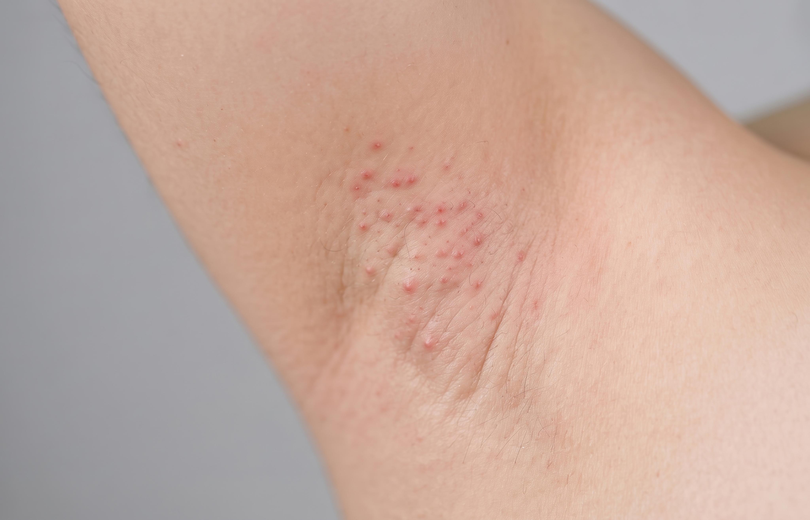

CID L73.2
Hidradenite supurativa
O que é, sintomas, diagnóstico e qualidade de vida.
O que é hidradenite supurativa?
A hidradenite supurativa (HS), também conhecida como acne inversa, é uma doença de pele crônica e inflamatória, caracterizada pelo aparecimento de nódulos dolorosos e profundos sob a pele.1,2
Com a evolução da doença, os nódulos podem levar à destruição do tecido subcutâneo e à formação de túneis sob a pele, que podem resultar em cicatrizes.1,2
As regiões mais frequentemente afetadas são as axilas, a região dos seios, a virilha, a região genital e a região glútea (nádegas).3
A HS é uma doença inflamatória progressiva e multifatorial. Fatores genéticos, ambientais e de estilo de vida podem estar associados ao seu desenvolvimento, assim como diferentes comorbidades. Embora suas causas ainda não estejam totalmente esclarecidas, acredita-se que a inflamação dos folículos pilossebáceos tenha papel no aparecimento da doença.3–5

Quem pode desenvolver HS?
Inicialmente, o furúnculo pode começar como um nódulo na pele, semelhante a uma espinha com pus. Com o tempo, pode crescer e se tornar mais vermelho, quente e dolorido.4
O início da doença ocorre, em média, por volta dos 20 anos, embora possa variar.
As mulheres são mais afetadas do que os homens, em uma proporção aproximada de 3 para 1.
Entre os fatores associados a maior chance de desenvolver HS estão idade mais jovem, histórico familiar, obesidade e tabagismo.1,6
Quais são os principais sinais e sintomas da HS?
As lesões da hidradenite supurativa costumam ser inflamadas e doloridas. Elas podem permanecer por semanas ou meses e uma mesma lesão pode inflamar e desinflamar repetidamente no mesmo local.3
Entre os sinais e sintomas descritos estão:
- Cravos pretos em pequenas áreas da pele, muitas vezes aparecendo aos pares.1
- Nódulos persistentes e doloridos que podem aumentar de tamanho e permanecer por semanas ou meses.1
- Nódulos inchados, dor e sensibilidade nas áreas afetadas.3
- Drenagem das lesões com eliminação de pus, que pode apresentar odor.1
- Túneis sob a pele que podem conectar os nódulos; essas feridas podem cicatrizar lentamente e drenar sangue e pus.1
- Cicatrizes permanentes após o desaparecimento das lesões.3
A intensidade dos sintomas pode variar de pessoa para pessoa. Tabagismo e excesso de peso, além de fatores ambientais, podem estar associados a manifestações mais intensas da doença.1
Por que o diagnóstico precoce
é importante?
As lesões iniciais podem se parecer com furúnculos, acne
ou abscessos, o que pode contribuir para diagnósticos
incorretos. O reconhecimento da HS e o início do
tratamento podem reduzir o risco de progressão da
doença.7
Ainda assim, algumas pessoas percorrem um longo caminho até receber o
diagnóstico correto. Há pacientes que passam por cinco ou mais consultas
com profissionais de diferentes especialidades, e o atraso entre o início
dos sintomas e o tratamento pode chegar a 7 a 10 anos.8-10
Como é feito o diagnóstico?
Não existe um exame específico para confirmar a hidradenite supurativa. O diagnóstico é baseado principalmente na apresentação clínica da doença.3,11,12
O médico avalia, entre outros aspectos:
As características
das lesões
Presença de nódulos e outras lesões inflamadas e doloridas.3,12
A localização
Áreas típicas como axilas, seios, virilha, região genital e região glútea.3,12
A recorrência e a duração
Lesões que permanecem por semanas ou meses ou que reaparecem ao longo do tempo, inclusive no mesmo local.3
O histórico familiar de HS também pode ser considerado. A ausência de bactérias ou fungos causadores de infecção nas lesões pode reforçar o diagnóstico.12
Se você apresenta lesões dolorosas, recorrentes ou que deixam cicatrizes, procure um dermatologista.
Esse é o especialista indicado para avaliar, diagnosticar e orientar o tratamento da hidradenite supurativa.
Como é o tratamento da hidradenite supurativa?
A HS é uma condição crônica e não tem cura, mas o tratamento busca controlar a inflamação e as infecções intercorrentes, reduzir a progressão para quadros avançados com fibrose e cicatrizes, melhorar sintomas como dor e corrimento e favorecer a qualidade de vida.12,13
Os tratamentos atuais se apoiam em três pilares: educação do paciente, tratamento clínico da inflamação e terapia cirúrgica de fístulas, nódulos e tecido cicatricial.12,13
A escolha da abordagem deve ser individualizada, considerando a gravidade da doença e a extensão das lesões. Como cada pessoa pode apresentar manifestações diferentes da HS, a definição do tratamento deve ser feita pelo dermatologista.13,14
Entre as possibilidades descritas estão:
Mudanças no estilo de vida e outros cuidados
Perda de peso, abandono do tabagismo, uso de roupas soltas e ventiladas para reduzir a fricção e remoção de pelos da área afetada, inclusive por laser.3
Medicamentos
Podem ser utilizados tratamentos orais, tópicos, intralesionais ou subcutâneos, conforme avaliação médica.12,13
Procedimentos cirúrgicos
Podem fazer parte da estratégia terapêutica de acordo com as características e a extensão da doença.12,13
Convivendo com a hidradenite supurativa
Por ser uma doença crônica e apresentar sintomas desconfortáveis, a HS pode afetar a saúde física e emocional e também a vida social. Cuidar do bem-estar pode ajudar a lidar melhor com a condição no dia a dia.15
Cuidados que podem ajudar no dia a dia:
Alimentar-se bem e manter-se ativo pode ajudar a reduzir o estresse e contribuir para a manutenção de um peso saudável. A atividade física deve ser escolhida de acordo com os sintomas e, antes de iniciar uma prática, é importante buscar orientação médica e profissional.16
Frustração, ansiedade e sentimentos depressivos podem estar presentes. Conversar com amigos, familiares ou profissionais de saúde pode ajudar a lidar com as emoções.17
Manter horários regulares para dormir e reservar tempo para atividades relaxantes pode ajudar a mente e o corpo.16
O tabagismo está associado a sintomas piores da HS e parar de fumar pode ajudar alguns pacientes. Quando necessário, o médico pode orientar esse processo.1,16
Uma comunicação franca sobre a condição e seus impactos físicos e emocionais pode ajudar a ajustar a intimidade para maior conforto de ambos.18
Anotar previamente perguntas e preocupações sobre a doença, o diagnóstico e o tratamento pode ajudar na conversa com o médico.1
Artigos relacionados
Referências
1. Hidradenitis suppurativa. Mayo Clinic. Disponível em: https://www.mayoclinic.org/diseases-conditions/hidradenitis-suppurativa/symptoms-causes/syc-20352306. Acesso em 05 de junho de 2024.
2. Zouboulis CC, Desai N, Emtestam L, Hunger RE, Ioannides D, Juhász I, Lapins J, Matusiak L, Prens EP, Revuz J, Schneider-Burrus S, Szepietowski JC, van der Zee HH, Jemec GB. European S1 guideline for the treatment of hidradenitis suppurativa/acne inversa. J Eur Acad Dermatol Venereol. 2015 Apr;29(4):619-44. doi: 10.1111/jdv.12966. Epub 2015 Jan 30. PMID: 25640693.
3. Hidradenite Supurativa. Sociedade Brasileira de Dermatologia (SBD). Disponível em: https://www.sbd.org.br/doencas/hidradenite-supurativa/. Acesso em 05 de junho de 2024.
4. Rosi E, Fastame MT, Scandagli I, Di Cesare A, Ricceri F, Pimpinelli N, et al. Insights into the pathogenesis of HS and therapeutical approaches. Biomedicines. 2021;9(9):1168.
5. Deckers IE, Kimball AB. The handicap of hidradenitis suppurativa. Dermatol Clin. 2016;34(1):17–22.
6. Hidradenitis suppurativa. NCBI. Disponível em: https://www.ncbi.nlm.nih.gov/books/NBK534867/. Acesso em 05 de junho de 2024.
7. Lee EY, Alhusayen R, Lansang P, Shear N, Yeung J. What is hidradenitis suppurativa? Can Fam Physician. 2017 Feb;63(2):114-120. PMID: 28209676; PMCID: PMC5395382.
8. Evaluating patients' unmet needs in hidradenitis suppurativa: Results from the Global Survey Of Impact and Healthcare Needs (VOICE) Project. National Library of Medicine. Disponível em: https://pubmed.ncbi.nlm.nih.gov/31279015/. Acesso em 05 de junho de 2024.
9. Diagnostic delay in hidradenitis suppurativa is a global problem. National Library of Medicine. Disponível em: https://pubmed.ncbi.nlm.nih.gov/26198191/. Acesso em 05 de junho de 2024.
10. Delayed Diagnosis of Hidradenitis Suppurativa and Its Effect on Patients and Healthcare System. National Library of Medicine. Disponível em: https://pubmed.ncbi.nlm.nih.gov/32610312/. Acesso em 05 de junho de 2024.
11. Hidradenitis suppurativa (HS). NHS. Disponível em: https://www.nhs.uk/conditions/hidradenitis-suppurativa/?tag=makemoney0821-20. Acesso em 05 de junho de 2024.
12. Protocolo clínico e diretrizes terapêuticas da hidradenite supurativa. Ministério da Saúde. Disponível em: https://www.gov.br/conitec/pt-br/midias/protocolos/publicacoes_ms/pcdt_hidradenite-supurativa_isbn_21-08-2020.pdf. Acesso em 05 de junho de 2024.
13. Magalhães RF, Rivitti-Machado MC, Duarte GV, Souto R, Nunes DH, Chaves M, et al. Consensus on the treatment of hidradenitis suppurativa – Brazilian Society of Dermatology. An Bras Dermatol. 2019;94(2 Suppl 1):7–19.
14. Van Straalen KR, Prens EP, Gudjonsson JE. Insights into hidradenitis suppurativa. J Allergy Clin Immunol. 2022;149(4):1150–61.
15. Physical, emotional and social effects of HS. NHS. Disponível em: https://www.guysandstthomas.nhs.uk/health-information/hidradenitis-suppurativa/physical-emotional-and-social-effects-hs. Acesso em 05 de junho de 2024.
16. Looking after yourself physically. NHS. Disponível em: https://www.guysandstthomas.nhs.uk/health-information/hidradenitis-suppurativa/looking-after-yourself-physically. Acesso em 05 de junho de 2024.
17. Looking after yourself emotionally. NHS. Disponível em: https://www.guysandstthomas.nhs.uk/health-information/hidradenitis-suppurativa/looking-after-yourself-emotionally. Acesso em 05 de junho de 2024.
18. Communication and relationships. NHS. Disponível em: https://www.guysandstthomas.nhs.uk/health-information/hidradenitis-suppurativa/communication-and-relationships. Acesso em 05 de junho de 2024.
Material destinado ao público leigo. 2026 © Direitos Reservados Novartis Biociências S/A – Proibida a reprodução total ou parcial não autorizada. Atualizado em 24 de agosto de 2026.
BR-XXXXX